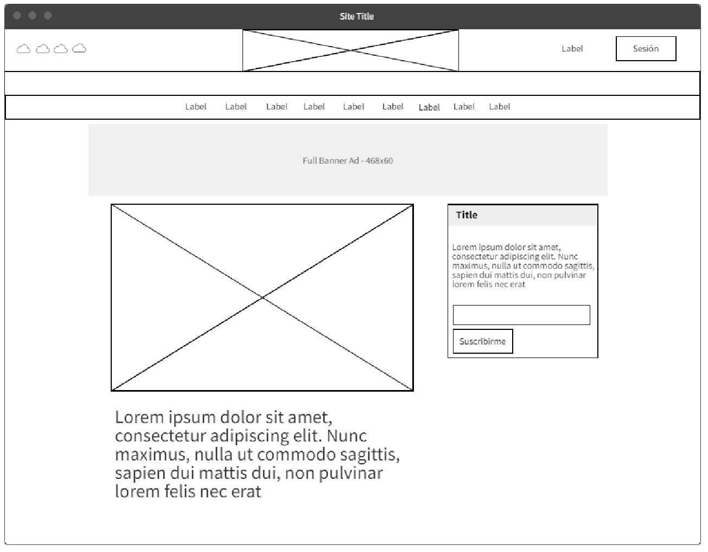

1. Colors i planificació de la web.
1.1 Colorimetria
Investiga que és la colorimetria i intenta averiguar per a que serveixes els següents instruments: - Colorímetre - Densitòmetre - Espectròmetre - Espectradiòmetre
1.2 Combinacions de colors
Busca tres exemples de logos o interfícies (el que preferisques) amb combinacions de colors complementaris, anàlegs o monocromàtics.
1.3 Mapa web
Intenta realitzar el mapa del lloc, de qualsevol portal web que vulgues (pot ser imaginari). Descriu-lo i detalla com seria (o és) el arbre del lloc.
Defineix entre 6 i 12 pàgines al lloc web. Com a exemple, pots basar-te en la Web de la UPV. Ells tenen un mapa Web fet com un arbre jeràrquic:
Que, com podreu comprovar, representa les pàgines del lloc i la seua jerarquia.
2. Interfície web
2.1 Anàlisi
Escull una de les següents dues pàgines per a realitzar aquesta tasca.
https://smartcity.valencia.es/noticias/ https://www.ionos.es/
Hauràs de realitzar el següent:
Identifica l’estructura de la pàgina. En concret, deuràs indicar on es situen les següents seccions: Capçalera, Cos, Peu.
Una vegada localitzades les seccions, identifica (mínim 1 de cada):
- Elements de navegació.
- Elements d’identificació.
- Elements d’interacció.
- Elements de contingut.
Per a cada element/secció, fes una captura de pantalla i adjunta-ho tot, junt una breu descripció que la identifique, a un document en format PDF.
2.2 Wireframe
A continuació, escull una pàgina Web que t’agrade i que cregues que està ben estructurada, i dissenya un WIREFRAME a partir d'alguna de les pàgines que continga. Compte, sols d’una, no de tot el portal. Si no trobes la inspiració en aquest moment, pots fer-lo dels portals webs indicats dalt.
Ho farem amb l’eina MockFlow. Hi ha d’altres, com Balsamiq Mockups que, si ho preferixes, també pots utilitzar. Exemple:

3. Mockup
3.1 Creació de Mockup
Juga amb alguna de les eines que s'han proposat a classe i realitza un mockup senzill de lliure creació.
Entrega un document PDF amb la teua sol·lució de la pràctica.